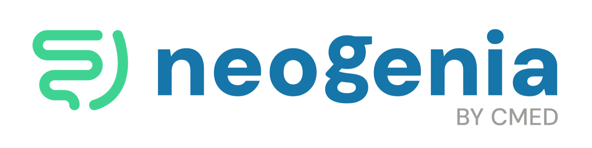
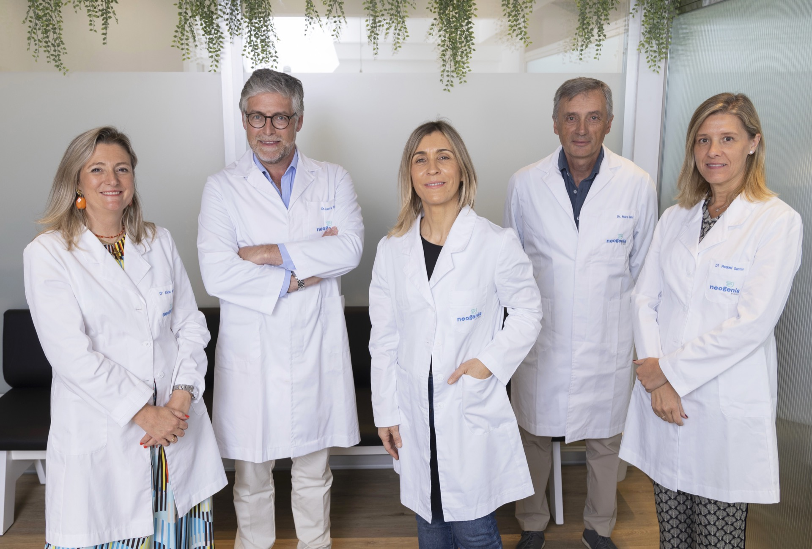

Recupera tu bienestar digestivo con el único método científico centrado en tu microbiota. Sin medicación innecesaria, con resultados reales.
Pacientes satisfechos
Mejora significativa
50 años de experiencia clínica
Datos protegidos e historial confidencial.
No estás solo. Miles de personas sufren molestias digestivas que afectan su calidad de vida.
Sientes inflamación abdominal que no desaparece y te acompaña como un malestar diario que limita tu vida.
Cada comida se convierte en un malestar prolongado. Comes con miedo a cómo te va a sentar.
Llevas tiempo con molestias persistentes que la práctica médica tradicional no ha logrado resolver de forma definitiva.
Cuando tu microbiota está en desequilibrio, tu energía se resiente. Te sientes agotado sin razón aparente.
¿Te sientes identificado? Habla con nuestro equipo ahora mismo.
Llamar ahoraLun - Vie: 9:00 - 20:00 · Sin compromiso
Un proceso claro y efectivo que te acompañará en cada paso.
Primera visita valorativa sin compromiso. Hablamos de tus síntomas y objetivos.
Realizamos pruebas específicas de microbiota con tecnología PCR avanzada.
Diseñamos tu tratamiento único: nutrición, suplementación y seguimiento médico.
Seguimiento continuo hasta que vuelvas a sentirte bien de verdad.
Primera visita valorativa sin compromiso. Hablamos de tus síntomas y objetivos.
Realizamos pruebas específicas de microbiota con tecnología PCR avanzada.
Diseñamos tu tratamiento único: nutrición, suplementación y seguimiento médico.
Seguimiento continuo hasta que vuelvas a sentirte bien de verdad.

No somos una clínica más. Somos especialistas en lo que hacemos.
Enfoque 100% en microbiota y salud digestiva. No tratamos síntomas aislados: analizamos tu organismo como un sistema interconectado.
Contamos con el aval de profesionales médicos reconocidos y más de 50 años de experiencia clínica. Tu seguridad es nuestra prioridad.
El 94% de nuestros pacientes experimenta una mejora significativa en 3 meses. Resultados medibles y avalados por la ciencia.
Cada tratamiento es único, adaptado a tu realidad. Combinamos nutrición, probióticos con respaldo científico y apoyo emocional.
¿Quieres saber cómo podemos ayudarte? Llámanos y te lo contamos.
Llamar ahora+34 910 000 000 · Consulta gratuita
Lee lo que dicen quienes ya dieron el paso.
"Llevaba años sufriendo con el intestino irritable sin encontrar solución. En solo 2 meses con Neogenia noté una mejora increíble. Ahora puedo comer sin miedo y he recuperado mi calidad de vida."
"El análisis de microbiota fue revelador. Por primera vez entendí qué estaba pasando en mi cuerpo. El acompañamiento del equipo ha sido excepcional y mi hinchazón ha mejorado enormemente."
"El trato en Neogenia es excepcional. Gracias a su plan personalizado ya no necesito medicación constante. Mi calidad de vida ha mejorado más de lo que imaginaba."
* Testimonios reales de pacientes. Resultados individuales pueden variar.
Resolvemos tus dudas más comunes.
La mayoría de nuestros pacientes comienzan a notar mejoras entre las 4 y 8 primeras semanas de tratamiento. El 94% experimenta una mejora significativa en los primeros 3 meses. Sin embargo, cada caso es único y los tiempos pueden variar según la complejidad de la disbiosis y la respuesta individual.
No. La primera consulta valorativa es completamente gratuita y sin compromiso. Queremos conocer tu caso, escucharte y valorar cómo podemos ayudarte antes de que tomes cualquier decisión.
No es necesario dejar tu medicación. Nuestro equipo médico trabajará de forma coordinada con tus tratamientos actuales. Siempre buscamos el enfoque menos invasivo posible, y al contar con el respaldo de CMED, podemos prescribir terapias complementarias si tu caso lo requiere.
Nuestro análisis incluye estudios de ADN bacteriano mediante tecnología PCR avanzada en heces, junto con una evaluación clínica integral. Esto nos permite identificar desequilibrios específicos en tu microbiota (disbiosis), sobrecrecimiento bacteriano y otros factores que están afectando tu salud digestiva.
El número de sesiones varía según la complejidad de cada caso. Normalmente incluimos revisiones periódicas para ajustar el plan de tratamiento según tu evolución. Nuestro seguimiento es continuo y cercano hasta que alcances un bienestar real y sostenido.
¿Tienes más preguntas? Estamos aquí para ayudarte.
Reserva tu consulta gratuita. Sin compromiso, sin presión. Solo queremos ayudarte.